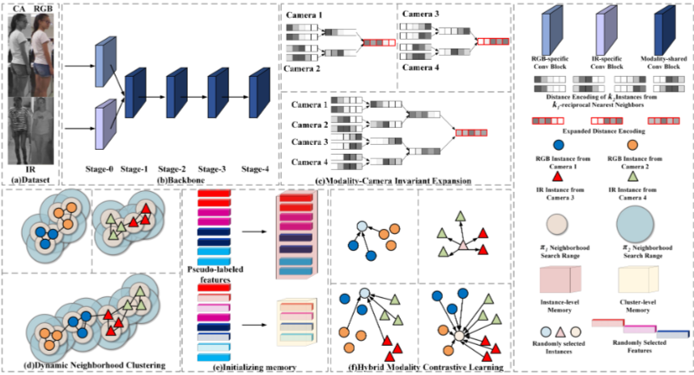
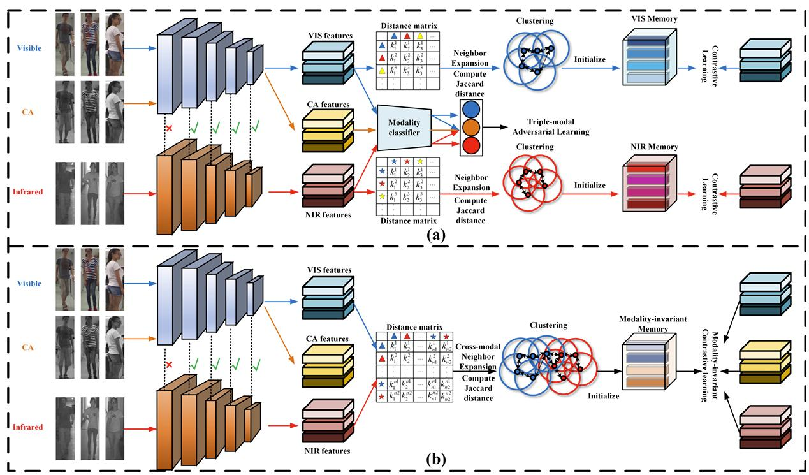

About
Selected Honors & Awards
- National Scholarship, 2023.
- National Scholarship, 2020.
- National Scholarship, 2018.
- Outstanding Master's Graduate & Excellent Master's Thesis, SYSU, 2024.
- Excellent Bachelor's Thesis, NWAFU, 2021.
Publications ( / )
FASTopoWM: Fast-Slow Lane Segment Topology Reasoning with Latent World Models
Arxiv 2025
TopoStreamer: Temporal Lane Segment Topology Reasoning in Autonomous Driving
Arxiv 2025

Dynamic Modality–Camera-Invariant Clustering for Unsupervised Visible–Infrared Person Re-Identification
TNNLS 2025
Extended Cross-Modality United Learning for Unsupervised Visible-Infrared Person Re-identification
SPL 2025
Motion-guided token prioritization and semantic degradation fusion for exo-to-ego cross-view video generation
Information Fusion 2025
Topo2Seq: Enhanced Topology Reasoning via Topology Sequence Learning
AAAI 2025 Oral

Progressive Cross-Modal Association Learning for Unsupervised Visible-Infrared Person Re-Identification
TIFS 2025
Pseudo Label Association and Prototype-Based Invariant Learning for Semi-Supervised NIR-VIS Face Recognition
TIP 2024
Unsupervised NIR-VIS Face Recognition via Homogeneous-to-heterogeneous Learning and Residual-invariant Enhancement
TIFS 2023
Robust Cross-domain Pseudo-labeling and Contrastive Learning for Unsupervised Domain Adaptation NIR-VIS Face Recognition
TIP 2023
Neutral Face Learning and Progressive Fusion Synthesis Network for NIR-VIS Face Recognition
TCSVT 2023
Syncretic Space Learning Network for NIR-VIS Face Recognition
TOMM 2023